AMD K7
Дебют архитектуры AMD K7 и процессоров Athlon пришелся на август 1999 года. Американская компания ставила перед собой всё более и более серьезные задачи, поэтому ожидания пользователей от новой разработки были довольно высоки, особенно учитывая просачивающуюся в прессу информацию о технических характеристиках.
Еще задолго до того, как компания выпустила платформу K7, AMD и Motorola заключили партнерское соглашение, в рамках которого для производства новых процессоров могли использоваться фабрики Motorola. Результатом их сотрудничества стала технология производства кристаллов с применением медных соединений.
За разработку архитектуры K7 отвечал новичок AMD — Дирк Мейер. На то время будущий CEO AMD лишь недавно присоединился к компании. До этого он работал в компании DEC и непосредственно участвовал в разработке процессоров Alpha.

Влияние DEC’овских процессоров на K7 чувствовалось сразу. Архитектура была разработана с прицелом на работу с высокой тактовой частотой. Для этого использовалась суперконвейерная суперскалярная модель. Платформу назвали суперконвейерной, поскольку число стадий конвейера увеличилось. Например, конвейер целочисленных операций состоял из 10 стадий, а модуль операций с плавающей запятой — из 17. Суперскалярность же заключалась в том, что Athlon умел обрабатывать до трех инструкций параллельно.
Ахиллесовой пятой архитектуры предыдущего поколения — K6 — была низкая производительность модуля вычислений с плавающей запятой (FPU). Так, процессоры AMD значительно уступали «Пентиумам». Не помогла тем «камням» и поддержка инструкций 3DNow!. Поэтому в K7 блок FPU был полностью переработан. Он стал трехконвейерным и содержал модули FMUL, FADD и FSTORE, которые могли работать как по отдельности, так и вместе. Блоки FMUL и FADD отвечали за выполнение инструкций MMX и 3DNow!. Первый модуль специализировался на операциях умножения, деления и вычисления квадратного корня из числа, а второй — на сложении и вычитании. Третий блок — FSTORE — обеспечивал доступ к оперативной памяти.
Раз уж мы упомянули инструкции 3DNow!, то стоит отметить, что в «Атлонах» этот набор команд был расширен. Новая версия 3DNow! получила 19 новых инструкций, предназначенных для обработки видеоданных и речи.
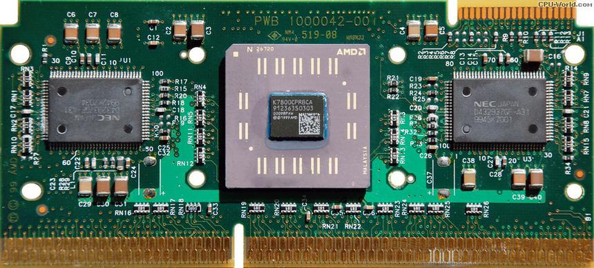Еще одним нововведением в K7 стало использование шины данных EV6. Данный интерфейс являлся еще одной прямой отсылкой к процессорам компании DEC, поскольку он использовался в моделях Alpha. По сравнению с шиной GTL+, которая использовалась в архитектуре Intel P6, EV6 обладала несколькими преимуществами. Во-первых, использование технологии DDR (Double Data Rate) позволило передавать данные по обоим фронтам тактового сигнала. То есть при реальной частоте шины 100 МГц на выходе получалась вдвое большая эффективная частота — 200 МГц. Это позволило лучше использовать потенциал оперативной памяти. Во-вторых, благодаря поддержке протокола «точка-точка» EV6 идеально подходила для построения многопроцессорных систем.
Кэш-память «Атлонов» также претерпела определенные изменения. Прежде всего, нужно заметить, что процессорный кэш состоял из двух уровней. «Мозги» 1-го уровня подразделялась на блоки инструкций и данных. Объем каждого модуля составлял 64 Кбайт, что в сумме давало 128 Кбайт. Например, у Pentium III емкость кэша первого уровня составляла всего 32 Кбайт. Количество кэш-памяти 2-го уровня в архитектуре K7 равнялось 512 Кбайт, но он работал на вдвое или втрое меньшей частоте, нежели сам процессор. Это объяснялось тем, что SRAM-память была вынесена за пределы кристалла.
Первые процессоры Athlon базировались на ядре Pluto, которое производилось по 250-нм техпроцессу. «Камень» содержал порядка 22 миллиона транзисторов. «Атлоны» с ядром Pluto устанавливались в разъем Slot A. Несколько позже появились кристаллы, основанные на ядре Orion, которое производилось по 180-нм техпроцессу. И это было его единственным отличием от Pluto.
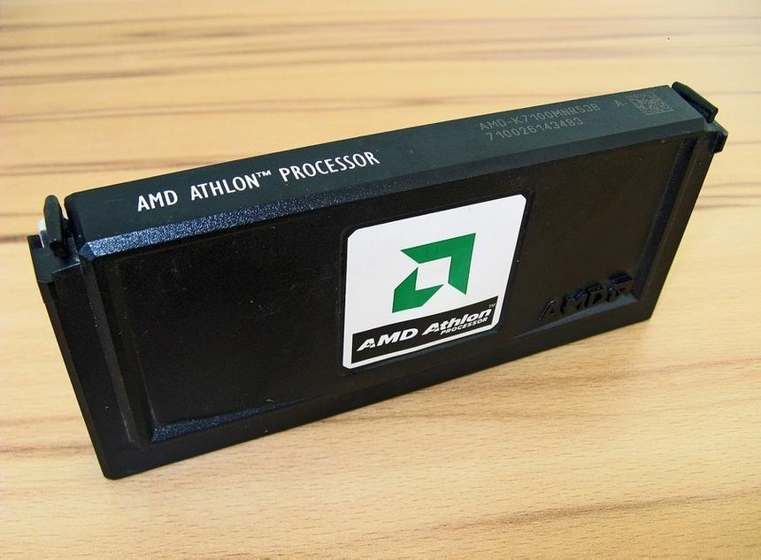Интересные изменения процессоры получили после выхода 180-нм ядра Thunderbird. Во-первых, отныне продукты AMD были совместимы с разъемом Socket A. Во-вторых, они претерпели и существенные архитектурные изменения. Кэш-память 2-го уровня была перенесена непосредственно в процессорное ядро и работала на одинаковой с ним частоте. Несмотря на то, что ее объем уменьшился до 256 Кбайт, скорость ее работы возросла. Помимо этого, была увеличена тактовая частота системной шины. Теперь она функционировала с частотой 133 МГц, то есть ее эффективный показатель равнялся 266 МГц.
Кстати, AMD’шные процессоры первыми смогли преодолеть гигагерцевый рубеж. 6 марта 2000 года Athlon с ядром Thunderbird стал первым «камнем» в истории с рабочей частотой 1 ГГц. Но и это не стало пределом для архитектуры K7, так как чуть позже появились модели, которые функционировали на частоте 1400 МГц.
Несмотря на коммерческий и технологический успех K7, архитектура была далеко не идеальна. Основной ее проблемой являлся медленный кэш 2-го уровня — даже после того, как он был перемещен в кристалл, его производительность оставляла желать лучшего. Также недостатком первых «Атлонов» считалось отсутствие поддержки «интеловского» набора инструкций SSE. Эти команды были своего рода аналогом инструкций 3DNow!, и подавляющее большинство приложений «затачивалось» именно под SSE. По этой причине процессоры Athlon зачастую уступали в производительности кристаллам Intel.
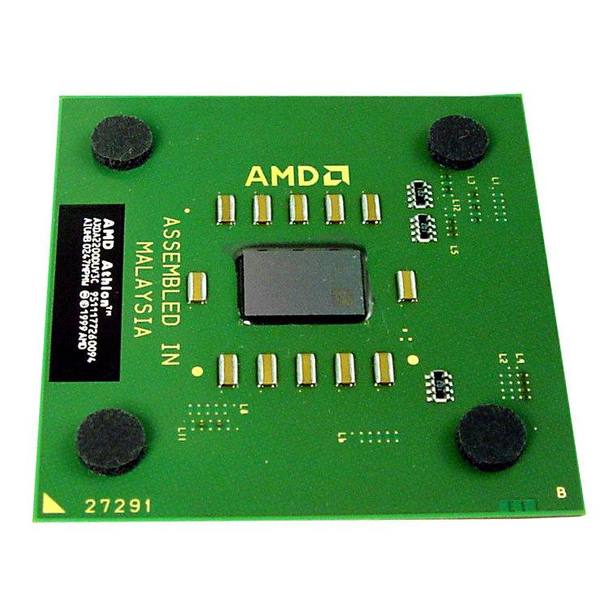Эти недостатки были исправлены в новом ядре Palomino, на базе которого выпускались решения Athlon XP (eXtra Performance). Кроме поддержки SSE и более быстрого кэша 2-го уровня, кристаллы наконец-то обзавелись термодатчиком для отслеживания температуры. Ядро Palomino производилось по 180-нм техпроцессу, но в сравнении с предшественниками стало сложнее и содержало почти 38 миллионов транзисторов. Большинство моделей Athlon XP устанавливались в разъем Socket A, хотя существовали и переходные варианты для Slot A. Максимальная тактовая частота Palomino составляла 1733 МГц.
Отметим, что с выходом Athlon XP компания AMD ввела рейтинговую систему обозначения процессоров. Так, индекс любой модели отныне не отображал реальную тактовую частоту ядра. Например, Athlon XP 2000+ функционировал со скоростью 1667 МГц и был сопоставим по производительности с процессором Pentium 4 с частотой 2000 МГц.
Ядро Palomino было представлено в октябре 2001 года, и уже спустя 9 месяцев на смену ему пришли процессоры Thoroughbred (Tbred-A). Это решение представляло собой то же ядро Palomino, но выпущенное по 130-нм технологическим нормам. AMD неожиданно испытала проблемы с наращиванием тактовой частоты в новых процессорах, поэтому через два месяца появилась новая ревизия Thoroughbred — Tbred-B. По архитектурному дизайну Tbred-A немного отличалась от Tbred-B, но это позволило достичь обновленному ядру частоты 2200 МГц. В Thoroughbred также была увеличена до 166 МГц частота системной шины.
Последним пришествием архитектуры K7 стало ядро Barton, выпущенное в 2003 году. Процессоры отличались от Thoroughbred лишь увеличенным до 512 Кбайт кэшем 2-го уровня. Barton лишь незначительно превосходил в производительности Tbred-B, и компания AMD поспешила вывести на рынок свою новую архитектуру под названием K8.
Intel NetBurst
Вспоминая архитектуру Intel P6, нельзя сказать, что она окончательно исчерпала свой потенциал к концу своего жизненного цикла. Вполне возможно, что, внеся определенные изменения, можно было получить более производительные процессоры на ее базе. Но инженеры Intel думали иначе и создали абсолютно новую архитектуру под названием NetBurst, которая в 2000 году заменила P6.
Так же как и AMD K7, NetBurst разрабатывалась с расчетом на высокие тактовые частоты. Поэтому в основе архитектуры лежал принцип гиперконвейеризации, которая, грубо говоря, являлась аналогом технологии суперконвейера в K7. Поэтому процессоры NetBurst аналогично имели конвейер с большим количеством стадий. В первых ревизиях NetBurst — ядрах Willamette и Northwood — он имел глубину в 20 стадий. В более поздних версиях — Prescott и Cedar Mill — мог похвастать уже 31 стадией. Сюда не входили этапы декодирования инструкций, поскольку сам декодер был вынесен за пределы конвейера. И если раньше сложные операции декодировались на лету, то в NetBurst разбиение инструкций происходило на стадии копирования кода в кэш-память 1-го уровня.
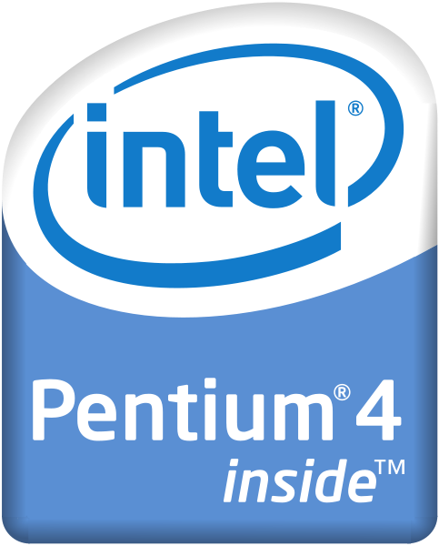К слову, о кэш-памяти. Она в NetBurst была другого типа. Так, на смену традиционной памяти пришел кэш последовательностей микроопераций (кэш трасс, Trace Cache), хранящий декодированные трассы инструкций, что позволяло декодеру не обрабатывать заново недавно выполненные операции. Такой подход позволил увеличить пропускную способность загрузки инструкций, а также снизить тепловыделение процессора. Объем кэша в NetBurst составлял 12 тысяч микроопераций. А сама память работала на уполовиненной (относительно тактовой) частоте.
Помимо всего прочего, была изменена конструкция арифметико-логических устройств. АЛУ было разделено на 3 блока. Одним из них являлось «медленное АЛУ», работающее с всеми целочисленными операциями. Два остальных — «2X АЛУ», выполняющие лишь элементарные операции (например, сложение). Блок предсказания ветвлений также был доработан. В сравнении с таким же модулем архитектуры P6, количество ошибок при вычислениях сократилось на 33%.
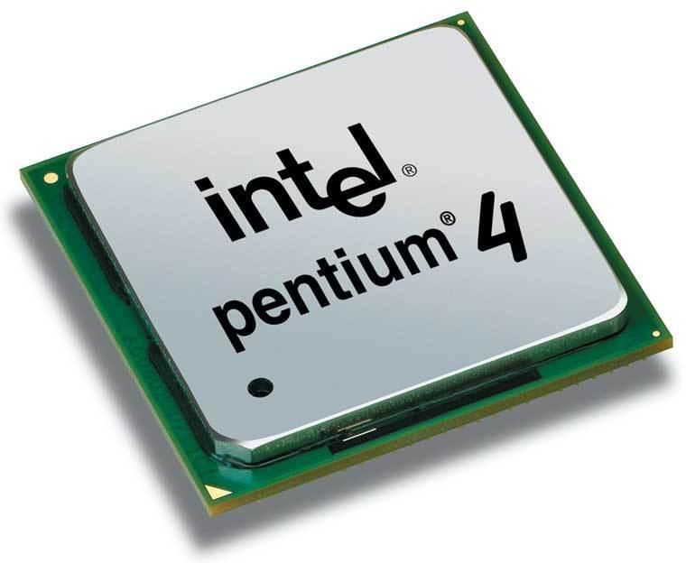Первое ядро с архитектурой NetBurst, носившее название Willamette, работало на частоте до 2 ГГц с частотой системной шины 400 МГц. Жизненный цикл его был недолгим. В январе 2002 года ему на смену пришли процессоры Northwood. В отличие от 180-нм ядра Willamette, эти кристаллы изготавливались по 130-нм техпроцессу. Также они получили увеличенный до 512 Кбайт объем кэш-памяти 2-го уровня и поддержку технологии мультипоточности Hyper-Threading. Тактовая частота Northwood варьировалась от 1,6 ГГц до 3,4 ГГц.
Более существенные изменения получило следующее ядро в линейке — Prescott, выпущенное в 2004 году. Производство процессоров вновь было переведено на более тонкие технологические нормы — 90 нм. Но изменился и сам дизайн архитектуры. Так, объем кэш-памяти возрос до 1 Мбайт (а в ревизии Prescott 2M — до 2 Мбайт), а конвейер получил 31 стадию вместо 20 в Willamette и Northwood. Был улучшен блок предсказания ветвлений, добавилась поддержка инструкций SSE3, а чуть позже — 64-битного расширения набора команд x86. Несмотря на все доработки, процессоры Prescott умудрялись уступать в производительности Northwood в однопоточных приложениях при одинаковой тактовой частоте. Более того, они обладали огромным энергопотреблением и тепловыделением, из-за чего Prescott удостоился заслуженного звания самого горячего x86-процессора.
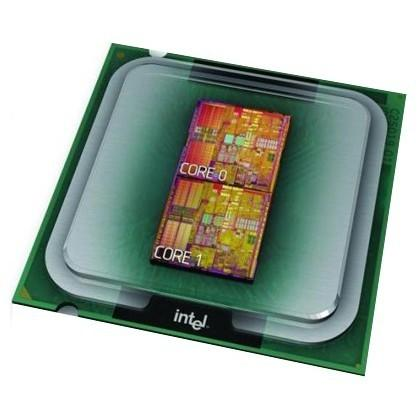В 2005 году Intel представила свой первый двухъядерный процессор Pentium D на базе ядра Smithfield. Такой «пень» представлял собой два ядра Prescott, расположенных на одной подложке. Решение получилось не самым удачным, хотя бы потому, что Pentium D обладал всеми недостатками Prescott (в первую очередь высоким тепловыделением). Чтобы уложиться в 130-ваттный TDP, инженерам Intel пришлось ограничить тактовую частоту Smithfield планкой в размере 2,8 ГГц. Так как производительность архитектуры NetBurst сильно зависела от частоты, то скорость первых двухъядерных процессоров Intel оставляла желать лучшего. Свою роль сыграло использование медленной DDR2-памяти, а также неоптимизированность большинства приложений под работу с двумя ядрами.
Последними процессорами с архитектурой NetBurst стали одноядерный Cedar Mill и двухъядерный Presler. Cedar Mill был полным аналогом Prescott 2M, за исключением технологии производства — он изготавливался по 65-нм технологическим нормам. Переход на новые «рельсы» позволил снизить энергопотребление ядра, но увеличить тактовые частоты. Что касается двухъядерной модели Presler, то в плане дизайна она повторяла Smithfield, то есть на одной подложке располагались два ядра, с единственным отличием: вместо Prescott использовались Cedar Mill.
В 2008 году выпуск последних процессоров с архитектурой NetBurst был остановлен. На смену NetBurst пришла более совершенная микроархитектура Core.
AMD K8
В конце 2003 года AMD выпустила новую архитектуру K8. На этот раз архитектурных изменений было не так много.
Ключевых нововведений было три: это 64-битная архитектура, встроенный контроллер памяти и шина HyperTransport. Новые продукты AMD получили название Athlon 64.
Действительно, именно в кристаллах K8 архитектура x86 впервые получила расширение и стала 64-битной. Само расширение официально именуется x86-64, но AMD назвала его по-своему — AMD64. Была получена и обратная совместимость с 16- и 32-разрядными приложениями, то есть 64-битные процессоры AMD без проблем работали со старыми программами.
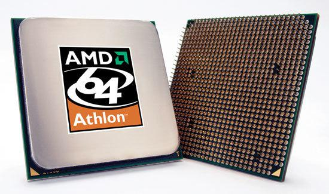Основной прирост производительности в сравнении с K7 обеспечил встроенный контроллер памяти. Если раньше данные проходили еще и через северный мост, который выступал связующим звеном между процессором и памятью, то теперь соединение осуществлялась напрямую. Вдобавок к этому был увеличен объем буфера ассоциативной трансляции и усовершенствован блок предсказания ветвлений.
Для связи с чипсетом Athlon 64 и другие процессоры с архитектурой K8 использовали шину HyperTransport. Она работала на частоте 200 МГц. Благодаря поддержке DDR (Double Data Rate) за один такт она могла передавать сразу два пакета, обеспечивая пропускную способность, равную 3,2 Гбайт/с.
В остальном инновации K8 носили скорее количественный характер. Например, конвейер процессоров стал длиннее на две стадии. Для целочисленных операций их количество равно 12, а для чисел с плавающей запятой — 17. Блок FPU сохранил прежний дизайн. А вот кэш не изменился.
64-битные «Атлоны» поддерживали множество наборов команд, таких как MMX, 3DNow!, SSE, SSE2 и SSE3. Кроме этого, процессоры получили поддержку технологии энергосбережения Cool’n’Quiet и аппаратной защиты от ошибки переполнения буфера NX bit (No Execute bit).
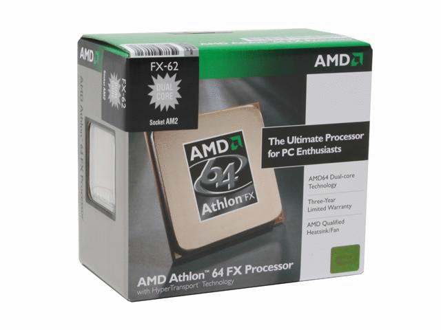Первые модели Athlon 64 были построены на 130-нм ядре Clawhammer и устанавливались как в разъем Socket 754 (одноканальный режим работы ОЗУ), так и в Socket 939 (двухканальный режим работы ОЗУ). Рейтинги процессоров варьировались от 2600+ до 4000+.
За Clawhammer последовало ядро Newcastle, которое почти не имело отличий от предшественника. В нем было отключено 512 Кбайт кэш-памяти 2-го уровня и добавлена поддержка технологии NX Bit, которая отсутствовала в первых реализациях архитектуры K8.
В рамках следующего ядра, Winchester, выпущенного в сентябре 2004 года, все процессоры устанавливались исключительно в разъем Socket 939. Архитектурно же Winchester ничем не отличался от Newcastle.
В апреле 2005 года AMD выпустила следующее ядро архитектуры K8 — San Diego. Процессор получил поддержку набора инструкций SSE3, а также переработанный контроллер памяти, который научился работать с модулями DDR-433/466/500. Максимальный рейтинг «камней» San Diego составлял 4000+.
Заключительным аккордом в линейке одноядерных процессоров K8 было ядро Orleans, представленное во втором квартале 2006 года. Кристалл получил поддержку технологии виртуализации AMD-V, но главной его особенностью стала работа исключительно через новый разъем Socket AM2. Объем кэш-памяти 2-го уровня равнялся 512 Кбайт, а максимальный рейтинг кристаллов — 4000+. При этом уровень энергопотребления ограничился отметкой 62 Вт, тогда как все предыдущие ядра потребляли не менее 89 Вт.
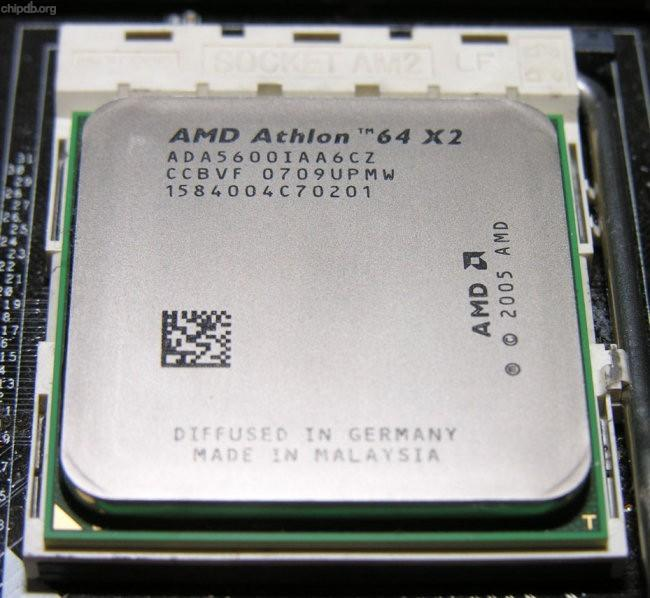В 2005 году AMD представила свои первые двухъядерные процессоры под маркой Athlon 64 X2. В основе таких моделей лежали два ядра, выполненных на одном кристалле. Они имели общий контроллер памяти, шину HyperTransport и очередь команд. Плюс в процессоре располагалась дополнительная логика управления. При этом кэш-память была индивидуальной для каждого ядра.
У Athlon 64 X2 присутствовали все «детские болячки», присущие первым двухъядерным процессорам. Во-первых, в сравнении с одноядерными моделями площадь чипа была значительно больше. Как и энергопотребление. Тем не менее, уровень TDP находился на вполне приемлемом уровне, особенно учитывая «прожорливость» конкурирующих решений в лице Pentium D. К примеру, тепловой пакет процессора Athlon 64 X2 3800+ составлял 89 Вт, тогда как аналогичный показатель модели Athlon 64 3800+ равнялся 65 Вт. Во-вторых, в приложениях, которые не задействовали многопоточность, одноядерные кристаллы были быстрее двухъядерных за счет более высокой тактовой частоты.
В течение 2005 и 2006 годов AMD выпустила четыре поколения двухъядерных чипов: три 90-нм ядра Manchester, Toledo и Windsor, а также 65-нм ядро Brisbane. Процессоры отличались объемом кэш-памяти 2-го уровня и энергопотреблением. Так, Brisbane комплектовался 512 Кбайт кэша на каждое ядро и имел TDP, равный 89 Вт. Максимальный рейтинг Brisbane составлял 6000+ при частоте 3100 МГц, хотя на базе ядра Windsor выпускался процессор Athlon 64 X2 6400+ с тактовой частотой 3200 МГц.
Не стоит забывать, что архитектура K8 лежала в основе решений для других сегментов рынка — бюджетных кристаллов Sempron, серверных Opteron и мобильных Turion.
Intel Core и последователи
Неудача архитектуры NetBurst заставила Intel вновь обдумать стратегию на ближайшее будущее. Процессоры Pentium 4 показали, что NetBurst не может достойно конкурировать с AMD K8. Даже больше: с течением времени преимущество решений конкурента лишь возрастало. Поэтому в микроархитектуре следующего поколения, получившей имя Core и представленной в начале 2006 года, было решено вернуться к корням и позаимствовать лучшие черты архитектуры P6.
Список полученных изменений стоит начать с конвейера. Он получил «всего» 14 стадий — примерно столько же использовал конвейер P6, в отличие от 31-стадийного дизайна NetBurst. Процессор научился обрабатывать до четырех инструкций за такт. Архитектура Core изначально проектировалась под двухъядерность, поэтому для всех «голов» была предусмотрена общая кэш-память 2-го уровня. Такой подход обеспечивал большую скорость работы и меньшее энергопотребление. В Core была добавлена поддержка различных энергосберегающих технологий, суть которых заключалась во включении необходимой процессорной логики при необходимости. Положительно на производительности сказалась и улучшенная работа с подсистемой памяти. Помимо всего перечисленного, в Core был переработан алгоритм обработки 128-битных инструкций SSE, SSE2 и SSE3. Если раньше каждая команда обрабатывалась за два такта, то теперь для операции требовался лишь один такт.
Отметим, что архитектура Core отличалась от NetBurst отсутствием поддержки некоторых технологий: например, Hyper-Threading и кэш-памяти 3-го уровня.
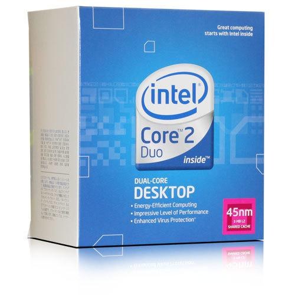Дебют микроархитектуры Core ознаменовали собой процессоры с кодовыми названиями Merom, Conroe, Allendale и Woodcrest. И если первый и последний предназначались для мобильных и серверных систем соответственно, то второй и третий были нацелены на настольный сегмент. Ядро Allendale было урезанной версией Conroe, в нем была уменьшена частота системной шины с 1066 МГц до 800 МГц, а также урезан объем кэш-памяти 2-го уровня с 4 Мбайт до 2 Мбайт. Плюс не было поддержки аппаратной виртуализации.
Новые «камни» получили оригинальные наименования. Intel ввела торговую марку Core 2, которая заменила Pentium в верхнем и среднем ценовом сегменте. Бренд остался, однако «пенечки» отныне перекочевали в бюджетный сегмент, где обитают и по сей день.
Core ознаменовала возвращение Intel на лидирующие позиции на рынке процессоров. В сравнении с кристаллами Pentium D, производительность Conroe выросла в среднем на 40%, а энергопотребление уменьшилось на те же 40%. Кроме этого, Conroe в целом уверенно превосходил в производительности AMD Athlon 64 X2.
В 2007 году на смену Core пришла 45-нм микроархитектура Penryn. Модификации были минимальны. В производстве новых кристаллов начали использоваться металлические затворы и материалы с высоким показателем диэлектрической константы. В архитектуру добавилась поддержка инструкций SSE4, а максимальный объем кэш-памяти 2-го уровня у двухъядерных процессоров увеличился с 4 Мбайт до 6 Мбайт. Поколение Penryn было представлено двухъядерными решениями Wolfdale и четырехъядерными Yorkfield.
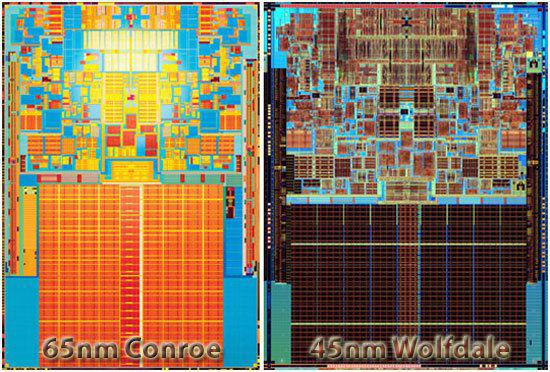Nehalem, архитектура следующего поколения, была выпущена в 2008 году. В сравнении с Core и Penryn она получила множество улучшений. Как и AMD K8, процессоры обзавелись встроенным трехканальным контроллером памяти DDR3. Nehalem получила новую модульную структуру, которая позволила впоследствии добавить в процессор графическое ядро, да и вообще легче наращивать количество ядер в кристалле. Шина FSB окончательно ушла в прошлое — вместо нее в старших процессорах для разъема Socket LGA1366 использовался интерфейс QPI (QuickPath Interconnect), а в решениях для Socket LGA1156 — DMI (Direct Media Interface). Объем кэш-памяти 2-го уровня был уменьшен до 256 Кбайт на каждое ядро, однако добавилась поддержка L3. Решения поддерживали технологию SMT (Simultaneous Multithreading) — аналог Hyper-Threading.
Чуть больше чем через год Intel перевела архитектуру Nehalem на новый 32-нм техпроцесс. Эта линейка процессоров получила название Westmere. Были выпущены решения с интегрированным графическим ядром Clarkdale, а также десктопные шестиядерные модели Gulftown.
С тех пор Intel успела вывести на рынок 32-нм процессоры следующего поколения — Sandy Bridge и их 22-нм модификацию Ivy Bridge, Haswell - 22-нм, Broadwell, Skaylake, Kaby Lake, Coffe Lake - 14-нм.
AMD K10 и последователи
С появлением архитектуры Intel Core компания AMD оказалась в довольно затруднительном положении. Если во времена конкуренции ее платформы K8 с «интеловской» NetBurst преимущество первой было очевидным, то теперь все было с точностью да наоборот. Даже топовые процессоры K8 с трудом сдерживали натиск не самых быстрых Conroe, поэтому AMD поспешила выпустить архитектуру нового поколения K10. Положительным моментом для AMD было то, что K8 сама по себе была успешным продуктом и кардинально перерабатывать его не потребовалось.
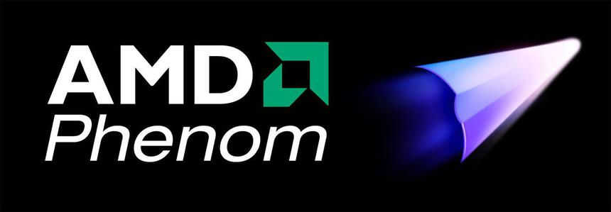Тем не менее изменения коснулись практически всех процессорных блоков, и это не считая общей оптимизации архитектуры ядра. Если раньше на одном кристалле могли располагаться лишь два ядра, то теперь это число возросло до шести. В дополнение к кэшу 1-го и 2-го уровней модели K10 наконец получили «мозги» L3 объемом 2 Мбайт. Она являлась общей. При этом объем кэша данных и инструкций 1-го уровня составлял 64 Кбайт каждый, а кэш-памяти 2-го уровня — 512 Кбайт. Еще одним отличием от K8 стал контроллер памяти. В процессорах использовался один 128-битный контроллер, а в K10 их стало два — 64-битных. Во многом изменение архитектуры контроллера было вызвано многоядерностью процессоров. Кстати, каждый контроллер памяти получил свой буфер. Такой подход позволил снизить задержки при обращении к памяти. Доработка затронула и блоки FPU. Каждое процессорное ядро имело 128-битный модуль вычислений с плавающей запятой. Были улучшены алгоритмы предсказания переходов. В результате архитектура K10 научилась обрабатывать две 128-битные SSE-инструкции за такт. Вдобавок ко всему новые процессоры работали через интерфейс HyperTransport 3.0. В сравнении с предыдущими версиями, новое поколение шины обеспечивали более высокую скорость обмена данными за счет более высокой тактовой частоты (до 2,6 ГГц). Большую роль начала играть экономичность кристаллов, поэтому в K10 AMD поработала над различными технологиями энергосбережения (Cool’n’Quiet 2.0, CoolCore), которые позволяли отключать неработающие блоки процессоров или же автоматически снижать частоту незагруженных ядер.
Первыми процессорами с архитектурой K10 стали серверные решения Opteron, выпущенные в 2007 году. Настольные модели K10 получили имя Phenom. Они пришли на смену «Атлонам», хотя AMD сохранила торговую марку для своих Low-End продуктов. Первые решения на базе K10 производились по устаревающему 65-нм техпроцессу. К сожалению, архитектура AMD мало что могла противопоставить конкуренту в лице Intel Core.
В конце 2008 года K10 перешла на 45-нм технормы. В новой версии архитектуры (К10,5) контроллер памяти был обучен работе с памятью DDR2 и DDR3, а также значительно снизилось энергопотребление, что позволило существенно повысить тактовые частоты процессоров. В настольный сегмент пришли процессоры Phenom II, которые устанавливались в новый разъем Socket AM3, сохранивший, впрочем, обратную совместимость с предыдущим Socket AM2+. В плане производительности K10,5 удалось сократить огромный отрыв от Intel Core.
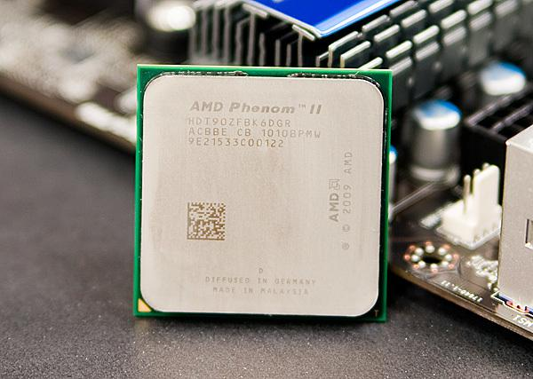Далее производство «переехало» с 45-нм на 32-нм техпроцесс. Однако такие кристаллы нашли свое применение лишь в первых APU (Accelerated Processing Unit) компании AMD с кодовым названием Llano.
В 2011 году на смену K10 пришла принципиально новая архитектура Bulldozer. Главное отличие «Бульдозера» от предшествующих платформ заключалось в самом строении ядра (а точнее модуля). Каждый модуль содержал два ядра, у каждого из которых был свой блок целочисленных вычислений и кэш-память 1-го уровня. При этом в рамках одного модуля у ядер был общий блок вычислений с плавающей запятой, 2 Мбайт кэша L2 и устройства выборки и декодирования инструкций. В плане работы «строительный блок» был похож на технологию Intel Hyper-Threading — можно даже сказать, что идеи «интеловской» технологии здесь были реализованы на аппаратном уровне. При этом по показателям производительности модуль Bulldozer приближался к полноценному двухъядерному процессору, имея при этом почти в два раза меньше транзисторов. Помимо перекроенной архитектуры, Bulldozer мог похвастаться исполнением четырех инструкций за такт. Среди других улучшений нужно отметить поддержку кэш-памяти 3-го уровня объемом 8 Мбайт, шины HyperTransport 3.1, технологии увеличения частоты ядер Turbo Core второго поколения и наборов инструкций AVX, SSE 4.1, SSE 4.2, AES. Также процессоры Bulldozer были наделены двухканальным контроллером памяти DDR3 с эффективной частотой 1866 МГц.
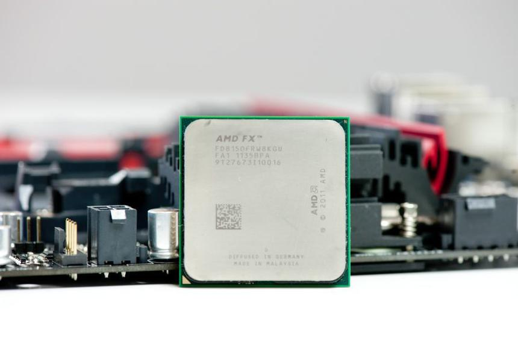Первыми решениями на базе Bulldozer стали кристаллы FX. Но они так и не смогли потеснить процессоры Intel.
В AMD быстро осознали критичность ситуации, поэтому вскоре (в середине 2013 года) появилось на свет следующее поколение процессоров — Piledriver. Модель представляла собой улучшенную во всех отношениях архитектуру Bulldozer. Были доработаны блоки предсказания ветвлений, возросла производительность модуля операций с плавающей запятой и целочисленных вычислений, а также тактовая частота. Стал быстрее интегрированный контроллер памяти. При этом энергопотребление и тепловыделение снизилось. В среднем процессоры с архитектурой Piledriver стали на 15% быстрее «бульдозеров».
Ну, а в начале 2014 года AMD представила третье поколение архитектуры Bulldozer — платформу Steamroller. Она не претерпела каких-либо кардинальных изменений в сравнении с Piledriver. Самое существенное нововведение — это интеграция для каждого модуля собственного независимого декодера, который может обрабатывать до четырех инструкций за такт. Была улучшена работа кэш-памяти, блока предсказания ветвлений и контроллера памяти.
AMD Zen
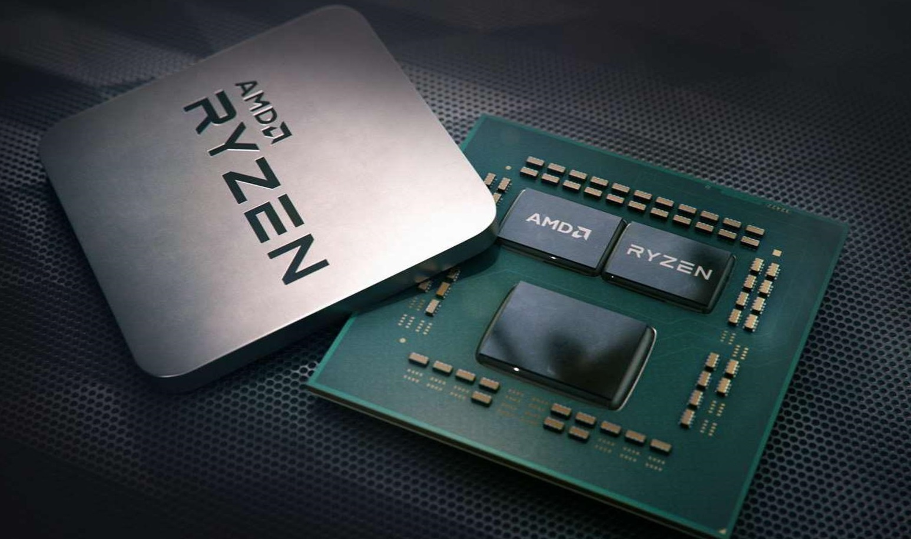Выпуск первых процессоров этой архитектуры состоялся 2 марта 2017 года.
Все процессоры архитектуры Zen первого поколения (Ryzen, Threadripper, EPYC) основываются на избыточных кристаллах Zeppelin коммутируемых с помощью шины Infinity Fabric (работающей с действительной частотой ОЗУ).
Основой кристалла Zeppelin являются 2 блока Сore Complex (CCX) и общий кэш 3го уровня (L3).
В каждом CCX расположены 4 ядра Zen с общим для всех ядер кэшем третьего уровня, объёмом 8 МБ на комплекс. Кэш третьего уровня по большей части эксклюзивный, в то время как данные кэша первого уровня обязательно присутствуют в кэше второго уровня . Каждое ядро в комплексе может обратиться к ячейкам кэша любого уровня примерно с одной и той же скоростью, однако в рамках CCX имеется некоторое замедление при обращении к дальней 4МБ половине L3 кэша, а доступ к 8 МБ L3 памяти в соседний CCX проходит с почти на порядок более низкой скоростью.
На рынке 19 апреля 2018 года появились микропроцессоры микроархитектуры Zen+.
В рамках поколения Zen+ продукты были переведены на 12-нм 12LP техпроцесс (GlobalFoundries). Микропроцессоры Zen+ имеют немного более высокие тактовые частоты и более низкое энергопотребление. При этом изменений в микроархитектурных подсистемах декодирования и исполнения инструкций не производилось.
27 мая 2019 года на выставке Computex 2019 было представлено третье поколение чипов Ryzen с микроархитектурой Zen 2. Микроархитектура является продолжением Zen и Zen+, но выполнена по технологической норме 7 нанометров. Как и предполагалось, рост показателя IPC (производительность на такт) по сравнению с Zen+ составил 15 %. Также среди преимуществ Zen 2 отмечается значительное увеличение объёма кэш-памяти третьего уровня и двукратное улучшение производительности блока операций с вещественными числами (FPU).